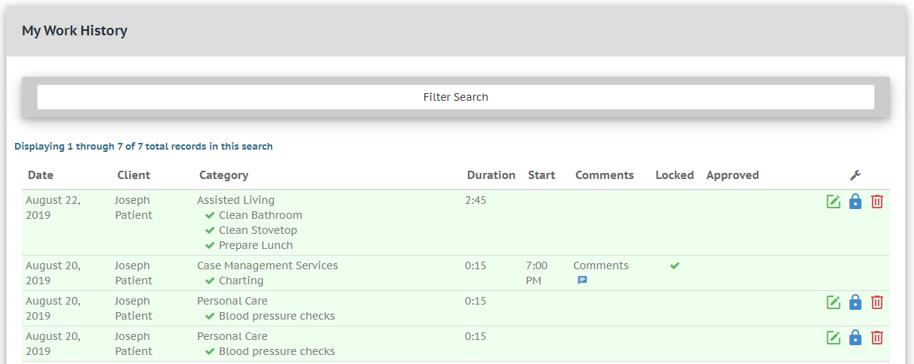

My Work
In the DMECC menu, navigate to "Work" > "My Work". This is where you will find a table of all the work you have performed.
Your work-group records can be:
Below is an example of a Work History table, with four work group records visible, one of which has been locked.

Locking Work
Work-group records much be approved by an administrator (or manager) before they can be included in your organizations monthly reports. When you are satisfied with the contents of your work-group record, please lock the record.
To Lock a work-group record, click the blue lock button.
Once a work-group record has been locked by a Support Worker, an administrator can approve the record.
Tip: If you need to unlock a work-group, contact your administrator. Administrators can un-lock work-group records as long as they have not already been approved.
Editing Work
If you need to make any changes to your work-group records, you can do so here.
To Edit a work-group record, click the green pen-and-paper button.
Deleting Work
Filtering the Table
Your list of work history can get quite exhaustive over time. To make searching easier, follow these steps:
Click on the "Filter Search" bar to trigger a drop down menu. Within this menu, you can filter by:
- Client name
- Date range
- Both client name AND date range
Click "Search" to trigger the filter.
To remove your filter, click "Clear Fields and Show All Records".